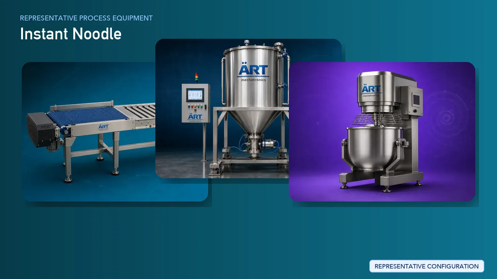

Instant Noodle Manufacturing Plant & Machinery Solutions
Instant noodles are one of the most widely consumed ready-to-cook food products globally, offering convenience, long shelf life, and consistent taste.

About Instant Noodle processing
ART Mechatronics provides complete turnkey solutions for instant noodle manufacturing plants, offering advanced systems for dough preparation, sheeting, steaming, frying, seasoning integration, and packaging. Our solutions are engineered for high-speed continuous production, consistent product quality, and large-scale industrial operations.
Complete Instant Noodle Process Flow
Raw materials such as wheat flour, starch, water, and additives are received and fed into the system.
Ensures continuous and controlled input.
- Proper hydration
- Consistent dough quality
- Strong gluten structure
Dough is passed through rollers to form thin sheets.
Ensures uniform thickness and structure.
Sheets are cut into noodle strands and shaped into wavy patterns.
Creates the characteristic noodle structure.
Noodles are steamed to gelatinize starch and partially cook the product.
Improves texture and cooking properties.
Noodles are cut and shaped into blocks (cakes).
Ensures uniform size and shape.
Noodle cakes are fried to remove moisture and enable quick cooking.
Ensures:
- Long shelf life
- Instant rehydration
- Crispy structure
Seasoning powder and oil sachets are prepared and packed separately.
Noodle cakes and seasoning sachets are packed into retail packs.
Enables high-speed retail-ready packaging.
Machinery Required for Instant Noodle Plant
- Material Handling Systems
- Storage Silos
- Dough Mixer
- Sheeting Machine
- Slitting Machine
- Steamer
- Cutting & Forming Machine
- Continuous Fryer
- Cooling Conveyor
- Seasoning Sachet Packing Machines
- Packaging Machines
Turnkey Instant Noodle Plant Solutions
ART Mechatronics offers complete turnkey solutions for instant noodle manufacturing plants, including:
- Process design & plant layout
- Dough preparation and sheeting systems
- Steaming and frying systems
- Seasoning sachet packing integration
- Automation & control panels
- High-speed packaging lines
- Installation & commissioning
- After-sales support
We customize solutions based on:
- Product type (block noodles, cup noodles, etc.)
- Production capacity
- Frying or non-frying process
- Packaging format
Why Choose Art Mechatronics
- Expertise in high-speed noodle production systems
- Advanced frying and drying technology
- Integrated seasoning and packaging solutions
- Fully automated continuous production lines
- Hygienic food-grade machinery design
- Global export capability
Machinery in a Instant Noodle plant
Where it's used
Get pricing & specs for the Instant Noodle plant
Share the product, target capacity, current process and plant location. These details help our engineers discuss the right machine or line configuration.
One partner, from design to start-up
ART Mechatronics designs, manufactures, installs and commissions your Instant Noodle solution with regional presence in India, UAE and Thailand.